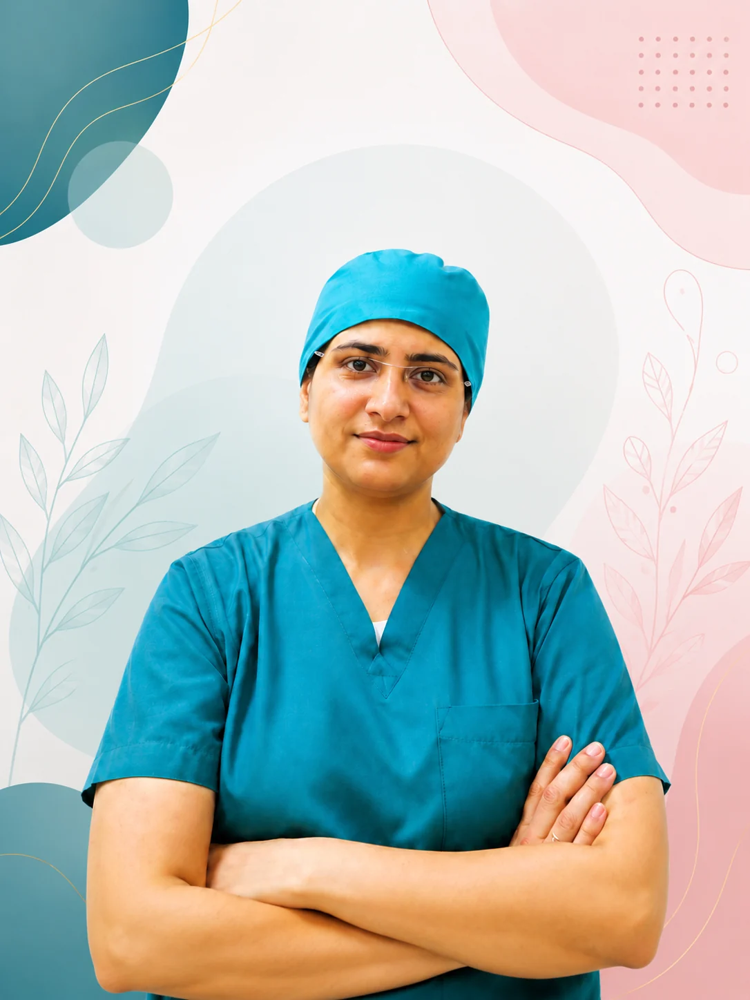
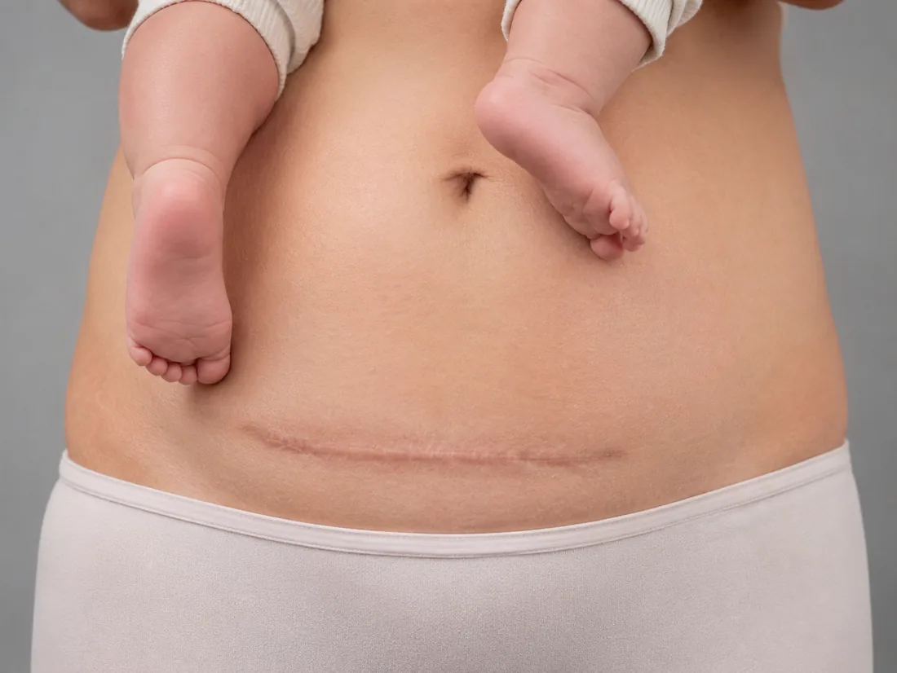
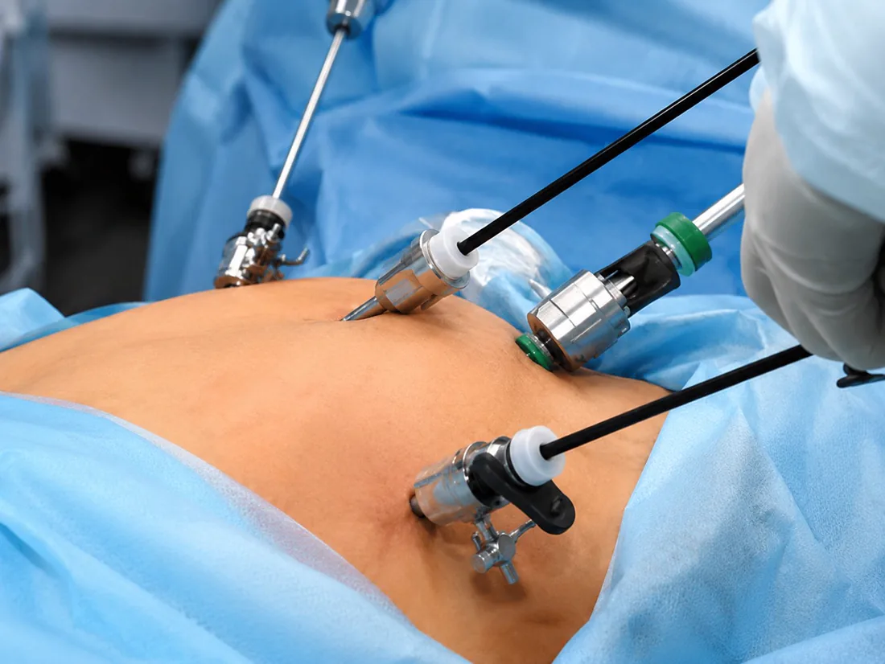
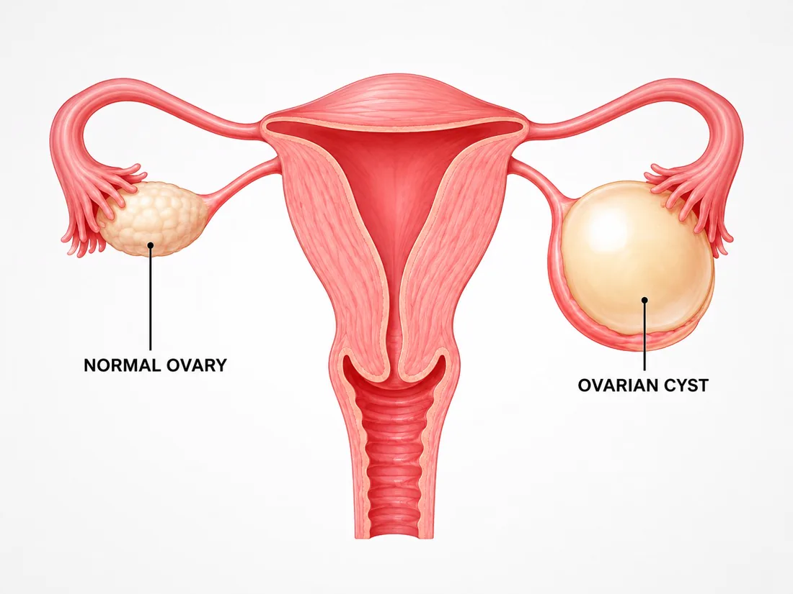

Dr. Asna Zehra Naqvi
Obstetrician & Gynaecologist
Compassionate Care for Every Stage of a Woman's Life
Steady, Expert Support for High-Risk Pregnancy & Fertility in Lucknow
Skilled Surgery, Delivered with a Gentle, Personal Touch


With over 10 years of experience, Dr. Asna Zehra Naqvi has built her practice around one simple idea — every woman deserves to feel properly cared for, not just treated. She holds an MS in Obstetrics & Gynaecology, MRCOG membership from the Royal College of Obstetricians & Gynaecologists, London, and a Diploma in IVF & Reproductive Medicine.
At Apollomedics Super Speciality Hospitals in Lucknow, her practice centres on high-risk pregnancy, fertility care, and minimally invasive laparoscopic surgery. Whether it's a young woman's very first visit or years later through pregnancy, delivery and menopause, she's there for the whole journey.
What patients notice most is how unhurried she is. She listens, explains things in plain language instead of medical jargon, and makes sure every question gets answered before you leave — so you walk out feeling heard, not just handled.
Kanpur Rd, Sector B, Bargawan, LDA Colony, Lucknow, Uttar Pradesh 226012
Every woman's journey looks a little different — from pregnancy and childbirth to fertility care and advanced surgery, her practice is built to cover it all.



Google Patient Rating
London Certified Specialist
Diploma — Reproductive Medicine
Training from the Royal College of Obstetricians & Gynaecologists in London means your care is held to a genuinely global standard.
From painless delivery to advanced laparoscopic surgery, the focus is always on a faster, gentler recovery.
Day or night, maternity and emergency support is there when you need it most, at Apollomedics, Lucknow.
One doctor, every stage — from the teenage years through pregnancy, fertility and menopause.
Quick, easy-to-follow videos answering the questions patients ask most.
⭐ Rated 4.9 / 5 by 99 patients on Google — a reflection of the trust women across Lucknow place in her care.
Very polite, gives you time to explain your condition and gives the best response.
Very polite doctor, I like her service.
Her knowledge and humble behaviour and her treatment is absolutely fantastic.